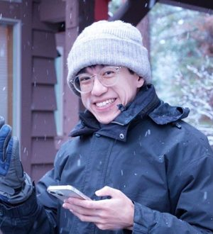

Profile · 地下資源與智慧計算研究室
陳尚潁
Shang-Ying Chen, Ph.D.

「以
國立成功大學 資源工程學系 助理教授
- 01地熱能源
- 02地下儲能
- 03放射性廢棄物處置
- 04二氧化碳地質封存
- 05永續地下水與污染整治
- 06地質災害與工程安全
01編輯雜誌Editorial
把首頁當成雜誌人物專訪：超大襯線姓名、不對稱版面、引言式研究宣言。
- 色彩
- 字體
- Noto Serif TC 900 ＋ Source Sans 3
- 網格
- 不對稱 7/5 欄
- 簽名細節
- 大號姓名與引號式研究宣言
優點辨識度高、有人味；尺度對比強，視線第一眼必落在姓名
不適合之處暖米色底在 Google Sites 白底中顯得突兀；338 px 時大字與引言易擠壓；長頁面（CV）難以延續